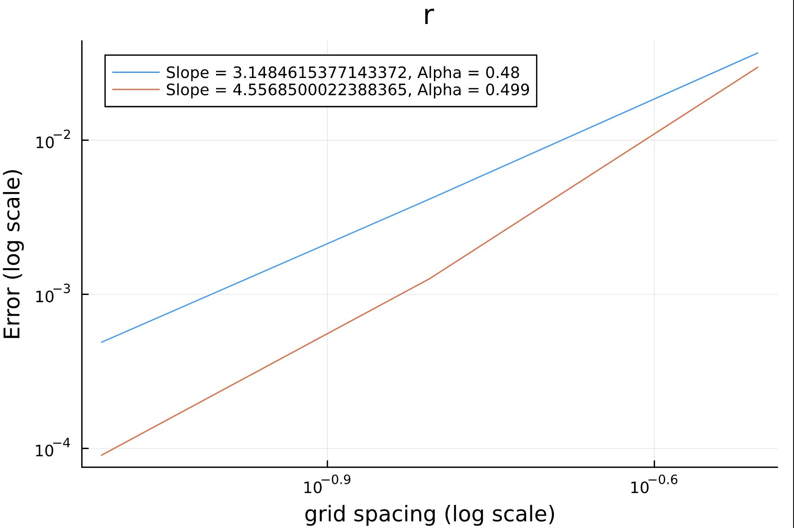
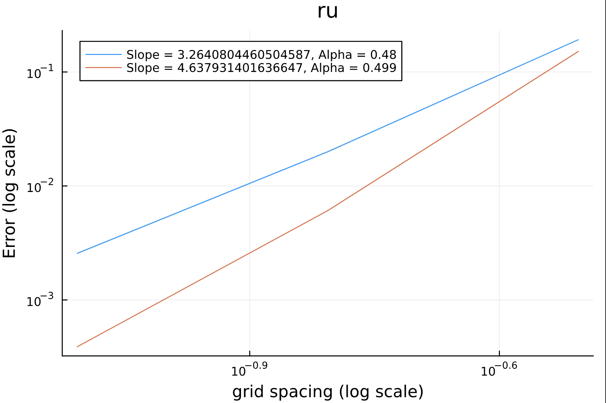
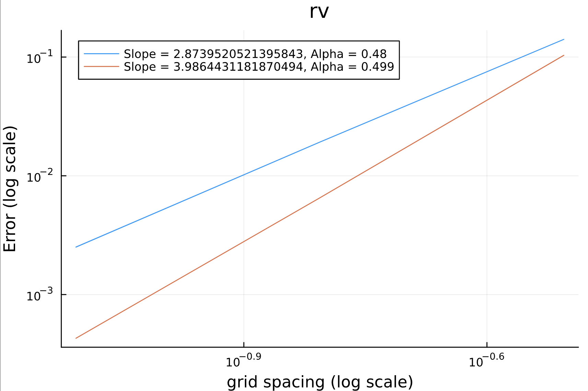
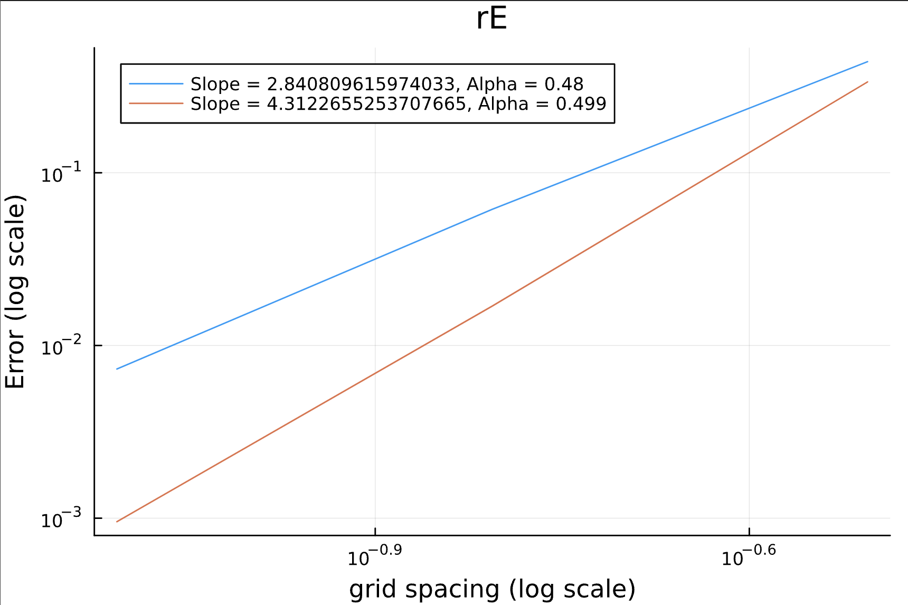

[Opening paragraph: Introduce the Kelvin-Helmholtz instability and its significance in fluid dynamics. Explain the computational approach used in this analysis.]
Problem Overview
[Describe the specific problem being solved, the numerical methods used, and the goals of the convergence analysis.]
Convergence Analysis Results
[Introduce the convergence study and explain what the plots below demonstrate about the numerical accuracy of the method.]




[Discuss the convergence rates observed in the plots. The slopes shown in the legends indicate the order of accuracy for each variable. Explain what the different alpha values represent and their significance.]
Kelvin-Helmholtz Instability Evolution
[Describe what the animation shows: the development of the characteristic spiral vortices that form as the instability grows, and how this relates to the physical phenomenon.]
Key Insights
[Summarize the main findings from the analysis. Discuss the numerical accuracy achieved, any interesting patterns in the convergence behavior, and the physical insights gained from the simulation.]
Technical Implementation
[Optional section to discuss the computational methods, programming language used (appears to be Julia based on the .jl files), and any noteworthy implementation details.]
[Concluding thoughts and potential future work or extensions.]